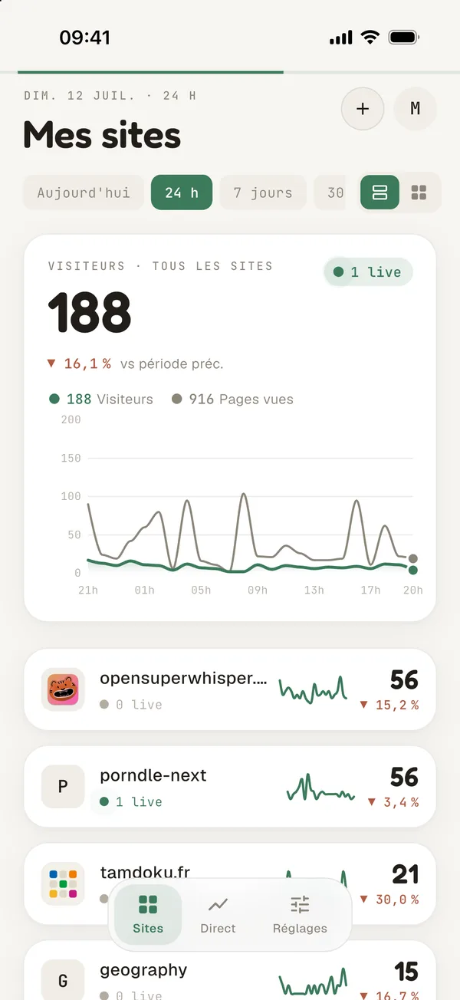
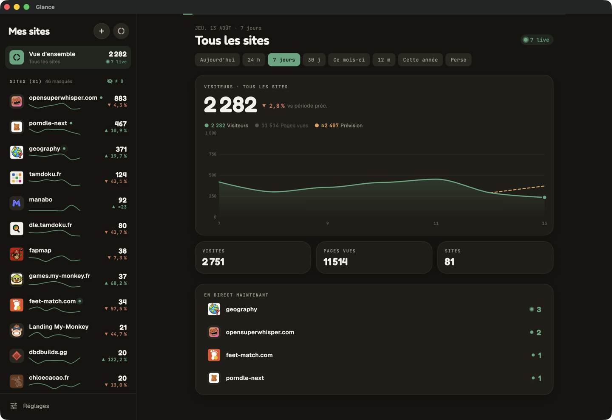

Un client gratuit et open source, clair et lisible, par-dessus Umami et Plausible. Tous vos sites réunis, sur iOS, Android, macOS et Windows — sans jamais quitter votre instance.

Sur une période en cours, la courbe se prolonge : où la journée, le mois ou l'année atterrissent au rythme observé.
Les visiteurs que vos sites s'envoient les uns aux autres, recoupés tout seuls : qui envoie, qui reçoit, combien.
Vue master-détail native : la liste de vos sites à gauche, tout le détail à droite. La même app, en grand — en thème clair ou sombre.

Un périmètre de lecture : les totaux et la courbe ne comptent que les sites du groupe. Un basculement, et vous passez d'un client à l'autre.
Vos comptes et vos groupes, sauvegardés et retrouvés sur chaque appareil. Chiffrés sur l'appareil avant l'envoi : le serveur ne peut pas les lire. Achat unique, pas d'abonnement.
Nouvel appareil ? Affichez un QR chiffré, scannez-le depuis l'autre : comptes, identifiants et groupes traversent. Gratuit, sans passer par le réseau.
Vos identifiants restent chiffrés dans le trousseau de votre appareil. Glance parle directement à votre instance, en lecture seule — aucun serveur tiers, aucun tracking. Seule exception, si vous l'activez : Glance Sync chiffre votre configuration sur l'appareil avant l'envoi, le serveur ne peut pas la lire.
Glance est open source. Lisez le code, ouvrez une issue, hébergez-le vous-même. Un projet du collectif My-Monkey.
Sur macOS, la façon la plus rapide, c'est Homebrew :
Glance est un client mobile et desktop, gratuit et open source, qui affiche vos statistiques Umami et Plausible. Il réunit tous vos sites dans une seule application claire — courbes lissées, temps réel et widgets — sans jamais quitter votre instance analytics.
Oui : l'application est gratuite et open source (licence MIT), sans compte à créer, sans abonnement et sans limite de sites. Une seule chose est payante, et elle est facultative — Glance Sync, la sauvegarde chiffrée de votre configuration — en achat unique.
Glance se connecte à Umami et Plausible aujourd'hui, y compris auto-hébergés. Le support de Fathom est prévu. Vous pouvez suivre plusieurs comptes et fournisseurs en même temps, réunis dans une vue commune.
Glance est disponible sur iOS (App Store), Android (Play Store), macOS (Homebrew ou DMG) et Windows. L'application est développée en Flutter, donc réellement multiplateforme.
Non. Glance parle directement à votre instance Umami ou Plausible, en lecture seule, sans serveur intermédiaire ni tracking. Vos identifiants restent chiffrés dans le trousseau (Keychain) de votre appareil.
Une option payante (achat unique) qui sauvegarde vos comptes et vos groupes et les retrouve sur vos autres appareils. Votre configuration est chiffrée sur l'appareil avant l'envoi : le serveur ne stocke qu'un bloc illisible. Sans elle, Glance fonctionne entièrement en local, et le transfert par QR reste gratuit.
Oui, avec les groupes. Un groupe est un périmètre de lecture : les totaux, la courbe et le direct ne comptent que ses sites. On bascule d'un groupe à l'autre depuis l'accueil.
Oui. Que votre instance Umami ou Plausible soit auto-hébergée ou cloud, Glance s'y connecte directement avec votre URL et votre clé d'API. Aucune configuration côté serveur n'est nécessaire.
Dites-nous ce qui va ou ce qui coince — chaque retour compte.
L'envoi a échoué. Réessayez dans un instant.
Votre retour est bien arrivé.